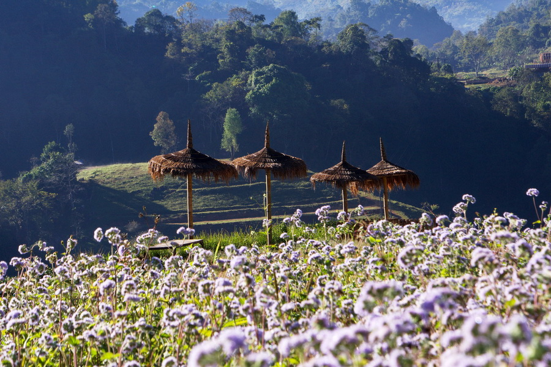

อีกหนึ่งจุดบนดอยอ่างข่างที่มีความงดงามเป็นจุดดชมพระอาทิตย์ขึ้นเคล้าสายหมอก ได้เห็นบรรยากาศของริ้วลายของแปลงชาไล่ระดับในมุมสูงอันสวยงาม ไร่ชาสองพันจะอยู่อยู่ทางซ้ายมือก่อนถึงบ้านนอแล จะไม่มีป้ายบอกเมื่อไปถึงในบริเวณนั้นให้สอบถามไปยังชาวบ้าน หากมาเที่ยวที่นี่ให้ได้บรรยากาศงดงามควรมาถึงประมาณ 6.30 น.

ดอยอ่างขาง อยู่ในเขตหมู่บ้านคุ้มหมู่ที่ 5 ต.แม่งอน อ.ฝาง จ.เชียงใหม่ อยู่สูงจากระดับน้ำทะเล ประมาณ 1,400 เมตร คำว่า “อ่างขาง” ในภาษาเหนือ หมายถึง อ่างรูปสี่เหลี่ยมตามลักษณะของ ดอยอ่างขางซึ่งเป็นดอยที่มีรูปร่างของหุบเขา ยาวล้อมรอบ ประมาณ 5 กิโลเมตร กว้าง 3 กิโลเมตร ตรงกลางของ อ่างขางเดิม เป็นเป็นภูเขาสูงเช่นเดียวกับบริเวณโดยรอบ แต่เนื่องจากเป็นภูเขา หินปูน เมื่อถูกน้ำฝนชะก็จะค่อยๆ ละลายเป็น โพรงแล้วยุบตัวลงกลายเป็นแอ่ง มีพื้นที่ราบ ความกว้างไม่เกิน 200 เมตร มีพื้นที่ใช้ทำการเกษตรในงานวิจัยประมาณ 1,800 ไร่ มีหมู่บ้านชาวเขาที่ทางสถานีฯให้การส่งเสริมและ พัฒนา อาชีพรวม 6 หมู่บ้าน ได้แก่ บ้านหลวง บ้านคุ้ม บ้านนอแล บ้านปางม้า บ้านป่าคา และบ้านขอบด้ง ซึ่งประกอบไปด้วย ประชากร 4 เผ่าได้แก่
ไทยใหญ่ มูเซอดำ ปะหล่อง และจีนฮ่อ อุณหภูมิเฉลี่ยตลอดปีประมาณ 17.7 องศาเซลเซียส อุณหภูมิสูงสุด 32 องศาในเดือนเมษายน และอุณหภูมิต่ำสุด 5 องศาเซเซียสในเดือนมกราคม ซึ่งหากมาเที่ยวในช่วงดังกล่าวอาจพบกับแม่คะนิ้งหรือน้ำค้างแข็งได้